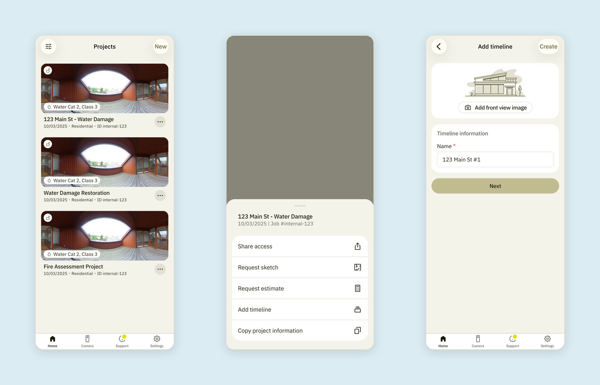
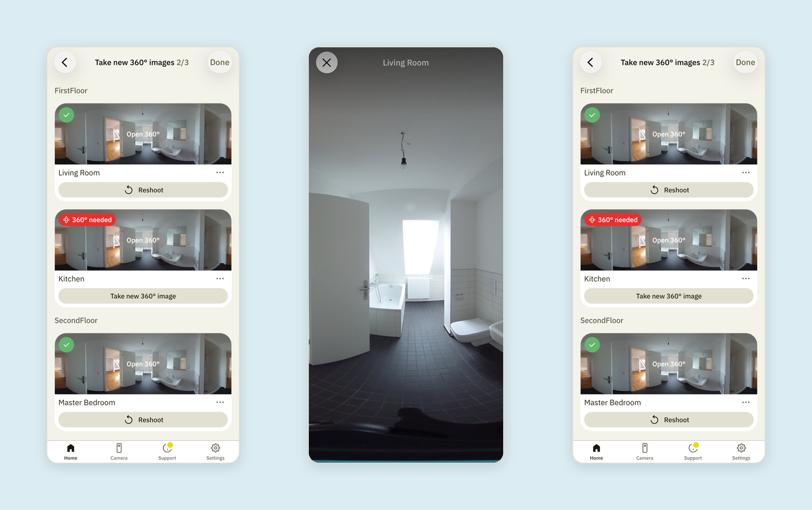
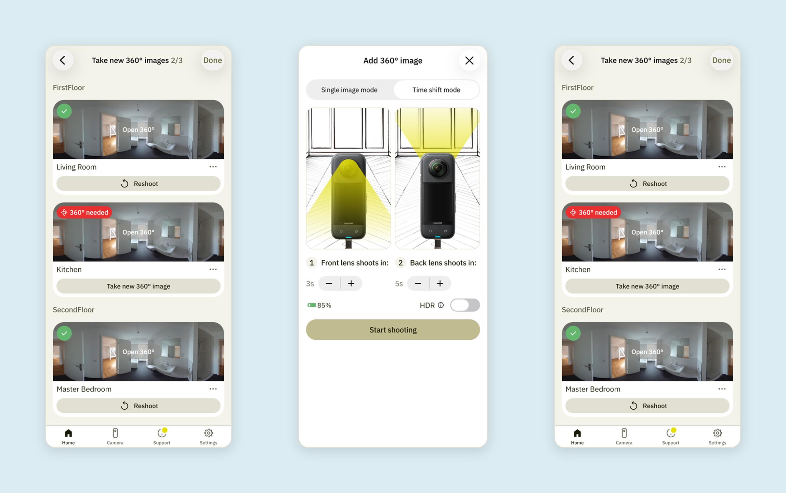
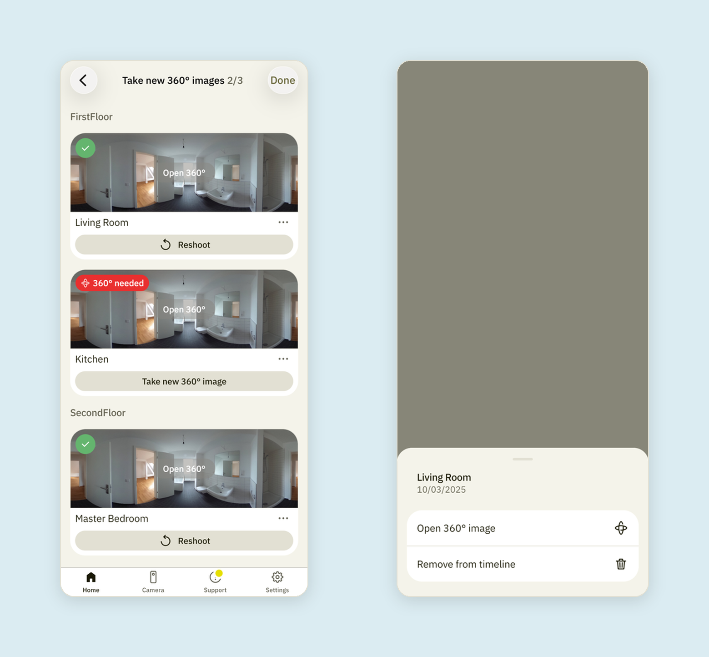
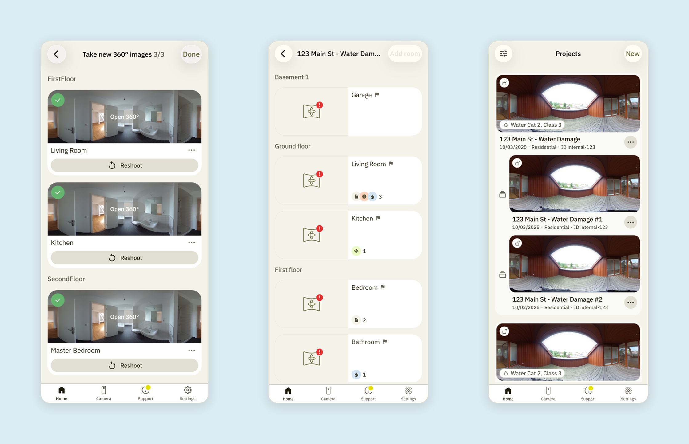
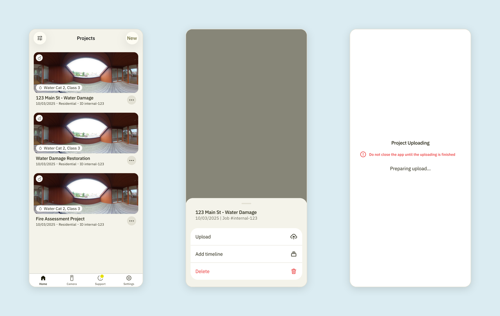
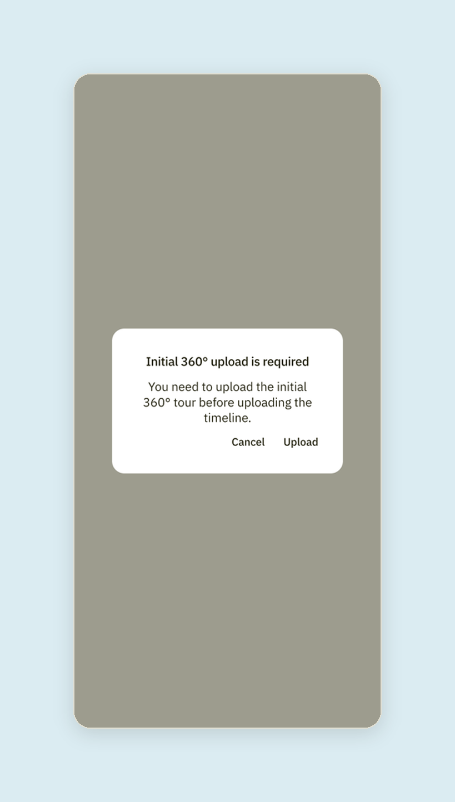

How to Add a Timeline¶
Find the initial 360° tour (not a timeline) in your project list and tap the 3 dots. Select "Add timeline." Fill out the timeline information and tap "Next":

If you want to view your previous 360° image, tap the 360° image preview for the room. To return, tap the cross icon:

To start capturing a new 360° image for the room, tap "Take new 360° image" and complete the shooting process. Once the 360° image is taken, you will see a green check icon in the upper-left corner of the room preview:

The three dots icon next to the "Take new 360° image" button can be tapped to either open the 360° image or remove it from the timeline:

After you updated all the 360° images you needed to, tap "Done" and return to the project list by tapping the back arrow:

Upload the timeline:

Note
If you try to upload a timeline for the initial 360° tour (parent tour) that hasn't been uploaded yet, a warning message will prompt you to upload the initial 360° tour first.
